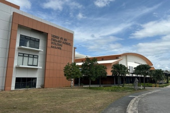

평택크리스천외국인학교(ICSP) 입학 가이드 — 평택 미국식·AP
1. 평택크리스천외국인학교(ICSP)는 어떤 학교인가
ICSP는 경기 평택에 있는 미국식 기독 외국인학교입니다.
· 커리큘럼 — 유치부터 고등(K-12)까지 미국식 과정. 고등에서 AP 과목을 제공합니다.
· 표준 — 영어·수학은 CCSS, 과학은 NGSS 등 미국 교육 표준에 맞춰 가르칩니다.
· 언어 — 수업·평가가 모두 영어로 진행됩니다.
· 배경 — 캠프 험프리스 미군기지가 가까워 미군·군무원·국제 비즈니스 주재원 가정이 많습니다.
※ 개설 과목과 세부 과정, 기독 학교 관련 사항은 학년·연도에 따라 달라질 수 있으니 학교 요강을 직접 확인하세요.
2. 지원 자격 — 주재원·해외 거주 가정은 유리
ICSP도 외국인학교라 자격부터 봐야 합니다. 외국 국적이거나 해외 거주 경력(보통 연속 3년 이상)이 필요하고, 내국인은 정원의 일정 비율까지만 받습니다. 미군기지 인근이라 미군·군무원 가정과 함께 다양한 국적의 학생이 다니며, 주재원으로 해외에 다녀온 가정은 거주 경력으로 자격이 되는 경우가 많습니다. (자격 전반은 외국인학교 입학 준비 참고)

경기 평택 국제학교 (이미지)
3. 입학시험과 준비 — 영어·수학과외
입학은 대개 영어 리딩·라이팅(에세이)·수학 배치고사·인터뷰가 중심입니다.
📖 영어과외
에세이 뼈대(주장·근거·예시)와 리딩·인터뷰를 준비합니다. 미군 가정 친구들과 영어로 대화가 되더라도 학업 영어(에세이·서술)는 따로 준비해야 합니다.
📐 수학과외
배치고사는 알지브라·지오메트리를 영어 지문으로 냅니다. 영어 용어·서술을 잡아 배치를 올리고, 입학 후 AP 미국수학(프리캘큘러스·AP 미적분)까지 이어 관리합니다. (→ 알지브라 공부법)
4. 평택에서의 현실 — 화상과외로 잇는다
평택·안성·오산 등 경기 남부권은 국제학교 전문 과외 인프라가 서울만큼 두텁지 않습니다. 그래서 한국 선생님 화상 1:1로 입학 준비부터 AP 미국수학·과학·영어 에세이 내신까지 학교 진도에 맞춰 관리하는 가정이 많습니다. 주재원 자녀의 입학 대비는 주재원 자녀 국제학교 입학 대비에 따로 정리해 두었습니다.
정리
평택크리스천외국인학교(ICSP)는 경기 평택의 미국식 기독 외국인학교로, 미군기지·주재원 가정을 배경으로 합니다. ① 지원 자격 확인(해외 거주 경력 유리) → ② 영어(에세이·인터뷰)·수학(배치고사) 준비 → ③ 입학 후 AP·내신까지 연결이 핵심입니다. 평택에서도 화상 1:1로 준비할 수 있습니다. 30분 무료 상담으로 점검해 드립니다.